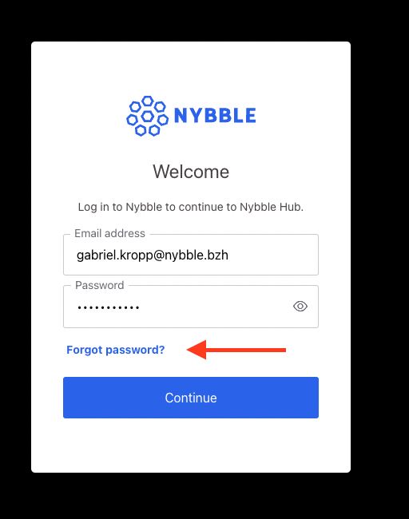

Authentification
L'accès aux services Nybble est sécurisé par Single Sign On, basé sur les services Auth0.
Processus d'ambarquement
3 étapes simples pour créer votre compte et l'initialiser :
- Création de compte par Nybble
- Définissez votre mot de passe
- Inscrivez un deuxième facteur pour une authentification plus forte (authentification multifacteur ou MFA)
Après l'étape 1, vous recevrez 2 mails :
- un mail de bienvenue qui résume le processus d'intégration
- mail de réinitialisation du mot de passe, qui vous donne un lien pour définir votre mot de passe
Authentification multifacteur (MFA)
Pour compléter l'authentification par mot de passe, Nybble a activé l'authentification multifacteur (MFA) en utilisant un smartphone comme 2ème facteur.
Vous aurez besoin d'une application Authenticator telle que :
- Google Authenticator (Google Play / App Store).
- Microsoft Authenticator (Google Play / App Store)
L'inscription se fera dès la 1ère connexion : un QR code vous sera demandé, vous pourrez le scanner avec l'une des applications répertoriées.
Enfin, après une connexion réussie avec votre mot de passe, un code à usage unique vous sera demandé, provenant de votre smartphone.
Comment réinitialiser votre mot de passe ?
Si vous avez perdu/oublié votre mot de passe, vous pouvez le réinitialiser depuis la page de connexion :
- Connectez-vous à Nybble Hub puis essayez de vous connecter comme d'habitude
- Sur la page de connexion, sélectionnez "Mot de passe oublié"
 - Fournissez votre mail et la plateforme vous enverra un lien et des instructions complètes pour réinitialiser votre mot de passe.